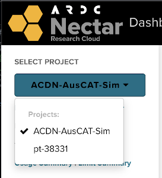
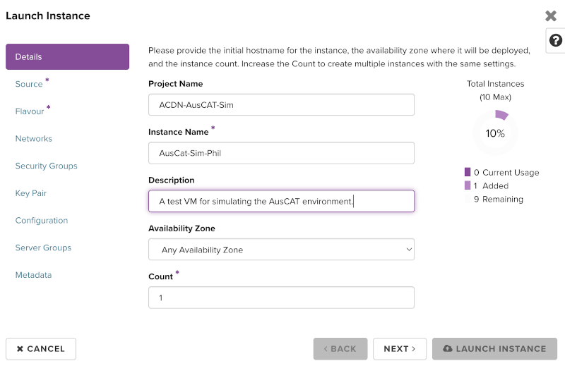
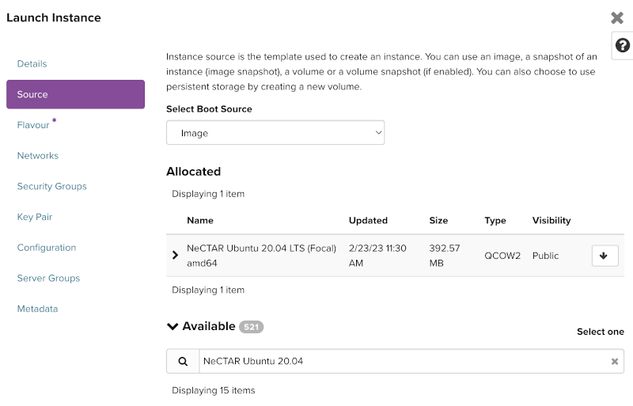
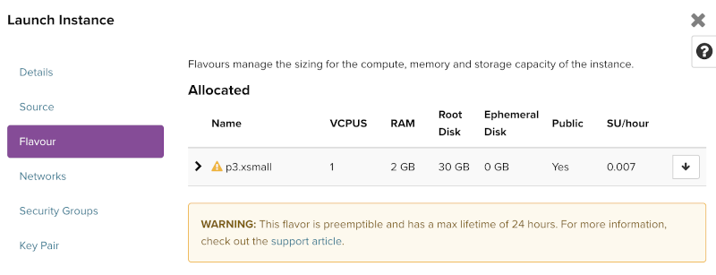
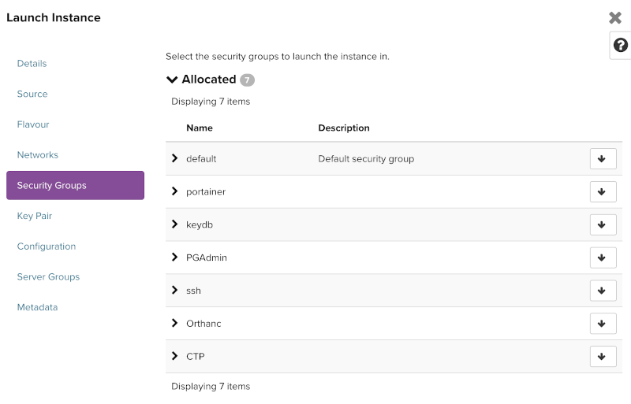
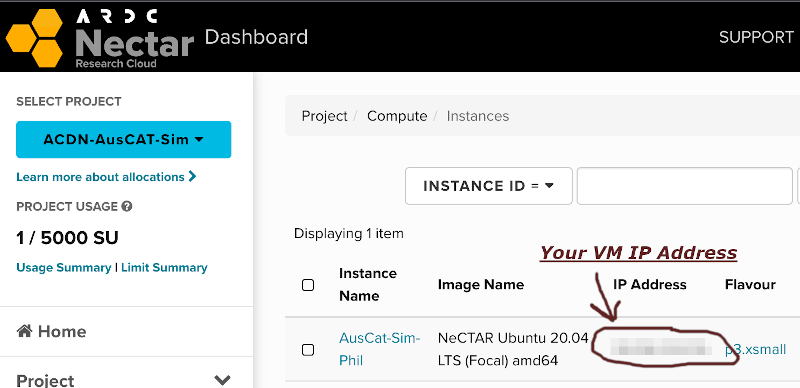

NECTAR Virtual Machine Setup#
You may want to setup a Virtual Machine to run in the NECTAR cloud to run the AusCAT Simulation Environment. The ACDN has a project on NECTAR cloud with some credits to run the simulation environment for development, educational and testing purposes.
Note that you will need a University affiliated account and access to ACDN-AusCAT-Sim project (if intending to use NECTAR cloud). Contact the AusCAT technical team for access to the ACDN NECTAR project.
Instance Creation Steps#
Perform the following steps to setup a virtual machine on the NECTAR cloud in which to deploy a simulation environment.
Login to NECTAR using your University affiliation credentials.
Switch to the
ACDN-AusCAT-Simproject.
Navigate to
Compute->Instancesand pressLaunch InstanceChoose an Instance Name, preferably including your name so this can be identified as your VM (e.g. AusCat-Sim-Phil). Press Next.

Select a
Sourceimage for the VM. NECTAR supplies many images from which to create VMs, ideally you will select one based on Ubuntu. The ideal base image, without anything else installed is:NeCTAR Ubuntu 20.04 LTS (Focal) amd64. Search for it, press the up arrow to make sure it appears under allocated.
Next select a
Flavour. This determines the amount of resources that will allocated to the VM. Choose one with a low SU/hour as this is the amount of credits that will be used within our project. If you are experimenting and don’t need your VM to stay longer than 24 hours, best to select a preemptible flavour (note the yellow alert symbol) as it will be deleted automatically. Press the up arrow to allocate.
Use the default
Networksettings, press next.Allocate the appropriate predefined
Security Groups(press the up arrow):
Generate an SSH keypair and add it to your VM instance. A detailed description on how this is done can be found here.
TIP: If you’re using Windows and haven’t get an OpenSSH client available, the easiest way to install one is via Git for Windows. Once installed you can Open the
Git BashTerminal and run:ssh-keygen, follow the prompts and output the public key generated into NECTAR:cat ~/.ssh/id_rsa.pub
You’re now ready to Launch your Instance!
Wait a few minutes for you VM to be ready. Once built, you can SSH into your VM by finding the IP address assigned:

Open your terminal, then sign in with:
ssh ubuntu@your-vm-ip
Note, if you specified a custom SSH key name, you will need to specify the private key for that pair:
ssh -i ~/.ssh/your-private-ssh-key ubuntu@your-vm-ip
You should now be logged in to your NECTAR VM.
Note: When NECTAR creates a Virtual Machine in certain Zones, there might be an additional IP addresses assigned to your instance for data transfer. In this case, connect to the IP Address without the -data suffix.